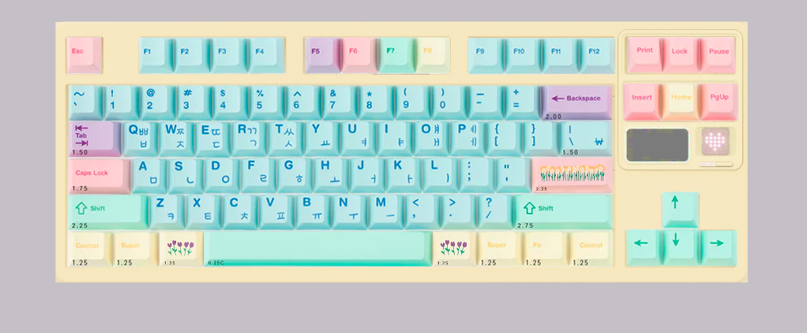
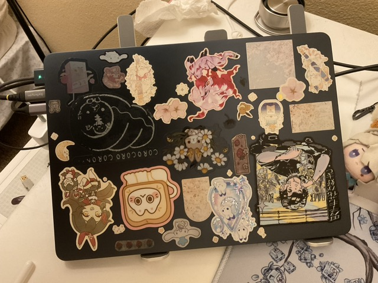
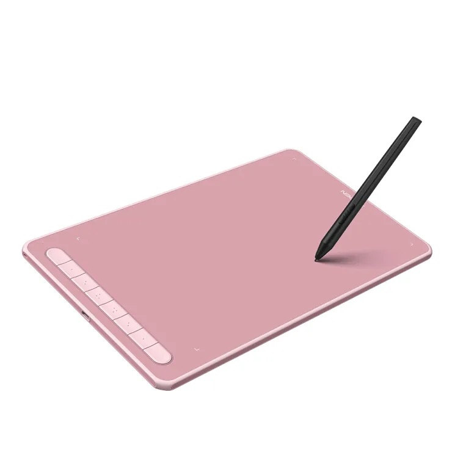
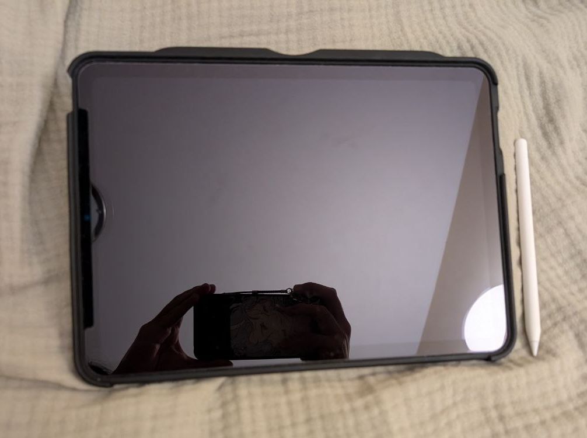

Coding Tools
ZOOM75 Mechanical Keyboard
I spent many hours choosing the specific keyboard and colors for my dream keyboard. The keycaps are NicePBT Flower Shop, and the switches are BSUN Hutt.
MacBook Air (M2, 2022)
I bough this laptop for college, and it's still going strong. Would you believe me if I said I chose this laptop specifically because it fit perfectly in my main backpack?
Digital Art Tools
XP-Pen Deco L
The cutest, pinkest drawing tablet you've ever seen. I usually pair this tablet with the drawing software Clip Studio Paint to create art on my desktop.
iPad Air Gen 5 and Apple Pencil
Though I had wanted an iPad for a very long time, I didn't buy one for myself until very recently. It's been fantastic for drawing digitally when I don't have access to my desktop. My software of choice on the iPad is Infinite Painter.
